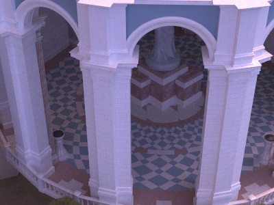
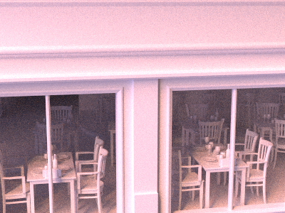
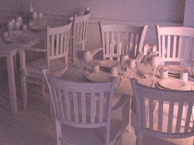

Offline CPU Ray Tracer



Overview
A physically‑based offline CPU ray tracer implementing BVH acceleration, global illumination, soft shadows, reflections, refraction, and HDR image‑based lighting (IBL). The renderer uses a path tracing approach to simulate realistic light transport, producing high‑quality images with physically accurate shading and material behavior.
My Responsibilities
- Implemented BVH acceleration structure for fast ray traversal
- Developed a full path tracing pipeline with Monte Carlo sampling
- Added global illumination, indirect lighting, and multi‑bounce scattering
- Implemented reflections, refraction, and Fresnel‑based materials
- Integrated HDR environment maps for image‑based lighting (IBL)
- Built material system supporting metal, dielectric, diffuse, and emissive surfaces
- Created debug visualizations for normals, albedo, and ray depth
Technical Highlights
- Path Tracing: Multi‑bounce GI, Monte Carlo sampling, Russian roulette termination
- Acceleration Structure: SAH‑optimized BVH for efficient ray traversal
- Lighting: HDR IBL, emissive materials, indirect diffuse and specular lighting
- Materials: Dielectric refraction, metal microfacet reflection, Lambertian diffuse
- Effects: Soft shadows, caustics, glossy reflections, depth‑based scattering
- Debug Tools: Normal buffer, albedo buffer, ray depth visualization
Tech Stack
Featured Components
BVH Acceleration Structure
Implemented a bounding volume hierarchy to drastically reduce ray–scene intersection cost, enabling complex scenes to render efficiently on the CPU.
Global Illumination & Path Tracing
Multi‑bounce indirect lighting with Monte Carlo sampling produces realistic soft lighting, color bleeding, and physically accurate shading.
Physically‑Based Materials
Supports dielectric refraction, metal microfacet reflection, diffuse scattering, and emissive surfaces for realistic material behavior.
HDR Image‑Based Lighting
Integrated HDR environment maps for natural lighting, reflections, and ambient illumination.